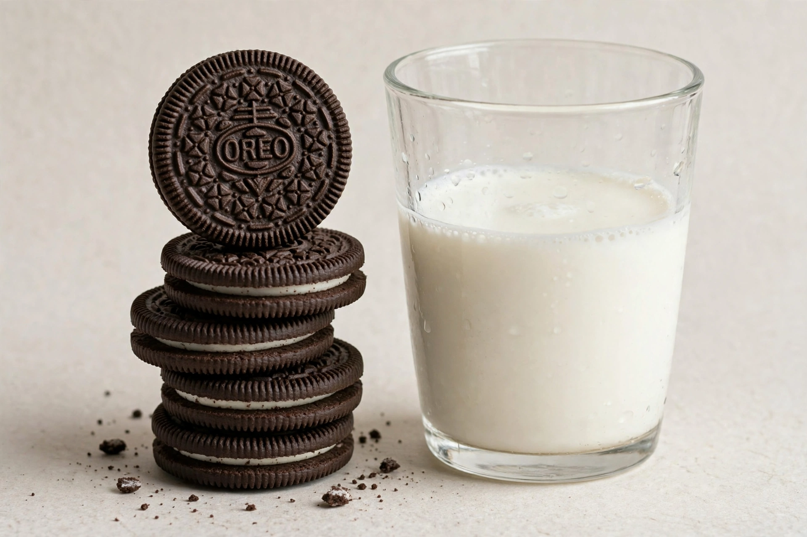

Oreo
From Wikipedia, the free encyclopedia

The Oreo is a brand of sandwich cookie consisting of two cocoa biscuits (or wafers) with a sweet crème filling, introduced by Nabisco in New York in 1912. Regularly cited as the world's best-selling cookie brand — annual sales estimates exceed US$4 billion — it is produced in dozens of countries and hundreds of flavours and formats, and its name and ritual ('twist, lick, dunk') are global cultural property.
History
The Oreo debuted at Nabisco's Chelsea bakery on 6 March 1912, targeting the British biscuit market's sophistication — and outliving its model, Sunshine's Hydrox (1908), which Oreo is often wrongly said to copy-adjacent: Hydrox indeed preceded it, and Oreo surpassed it so completely that Hydrox survives as the beloved answer to a trivia question. The embossed design (by engineer William Turnier, 1952) and the 1923 trademark built the icon; ownership passed to Mondelez International in 2012.
The modern Oreo
Flavour proliferation (Golden, Double Stuf, birthday cake, regional green-tea and wasabi editions in China) and collaborations drive the brand; periodic panics (whether the crème is vegan — it is, in most formulations, cross-contact aside; whether 'Oreo' derives from Greek oros, mountain, or French or, gold) feed its legend. The cookie's cultural footprint — in ice cream, in 'cookies and cream' as a flavour category, in the mouths of a century — exceeds any biscuit before it.